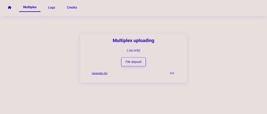
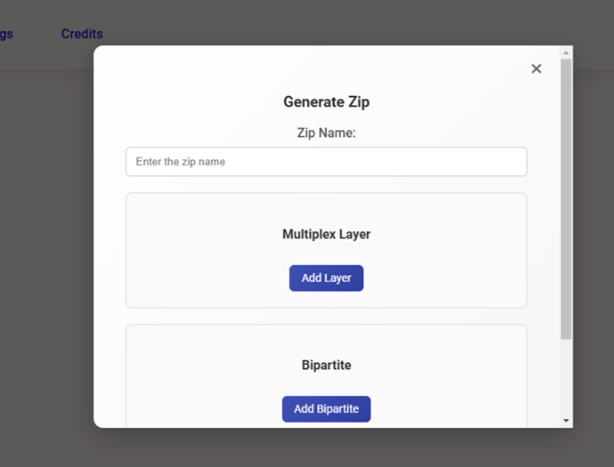
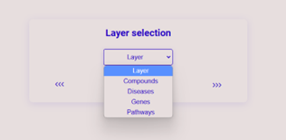
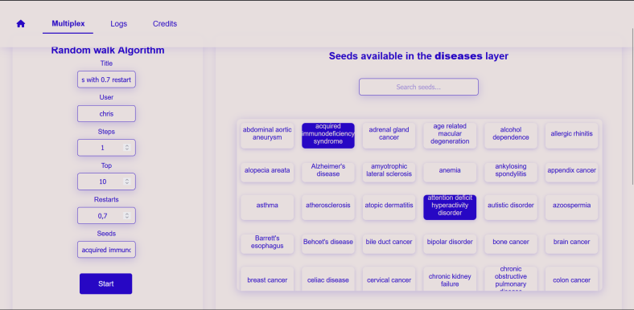
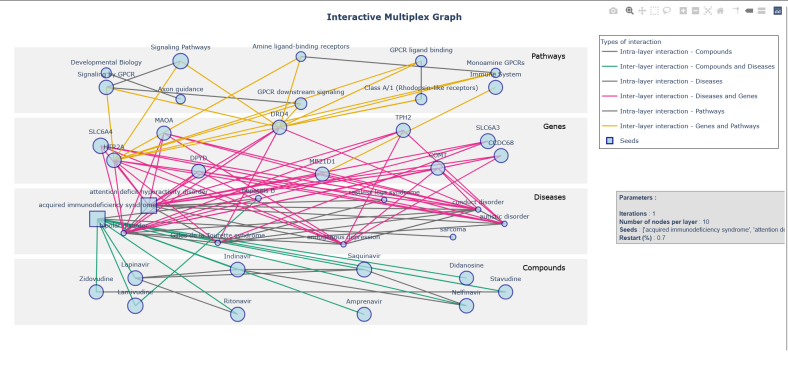
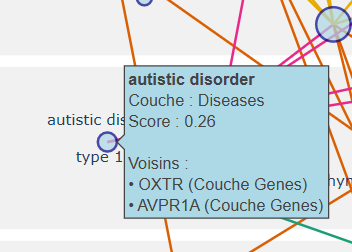
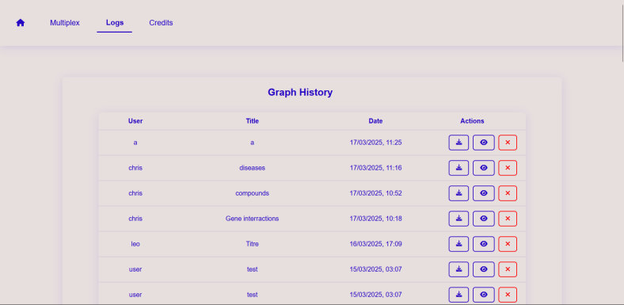

Dans la barre de navigation, passez à l'onglet Multiplex pour démarrer une marche aléatoire.

Premièrement, vous devez mettre en ligne votre graphe. Notre programme utilise des archives .ZIP pour représenter les graphes. L'archive .ZIP doit contenir :
layer_name.tsv, contenant deux colonnes, qui
attribue à
chaque numéro de couche un nommultiplex contenant
bipartite contenant des fichiers
M_N.tsv, où M et N sont des
entiers, décrivant les relations entre les nœuds de la couche M et ceux de la
couche N respectivement.
Après avoir mis en ligne votre archive, cliquez sur >>> pour continuer.
Si vous n'avez pas d'archive ZIP préparée, vous pouvez utiliser notre assistant de mise en ligne en cliquant sur Generate Zip. Nous vous guiderons étape par étape pour construire une archive parfaite.


Vous devez tout d'abord sélectionner la couche du graphe dans laquelle la graine que vous souhaitez utiliser pour la marche aléatoire se trouve. Ensuite, cliquez sur >>> pour continuer.
Patientez quelque secondes, le temps que toutes les graines de cette couche soient chargées

Vous pouvez maintenant préciser les paramètres que l'algorithme de marche aléatoire utilisera.
Si les fenêtres popup ne sont pas autorisées par les paramètres de votre navigateur, les résultats de la marche aléatoire restent disponibles dans la base de données Logs. Sinon, le graphe interactif devrait s'afficher dans un nouvel onglet.

Les couches du graphe sont représentées par des rectangles horizontaux. Les interactions dans une même couche sont affichées comme des lignes grises, tandis que celles entre des couches différentes reçoivent un code couleur. Les nœuds ont des diamètres qui varient en fonction de leur score de marche aléatoire.
En cliquant sur un type d'intéraction dans la légende, vous pouvez choisir d'afficher ou de masquer les arêtes de ce type, pour mettre en valeur les informations qui vous semblent les plus pertinentes.
Lorsque vous survolez un nœud, une info-bulle s'affiche contenant le nom de ce nœud, sa couche, son score de marche aléatoire, et une liste de tous ses voisins.
Dans la barre d'outils, de nombreuses fonctions de zoom proposées par Plotly sont disponibles. Vous pouvez toujours double-cliquer pour revenir à l'affichage par défaut.

Vous pouvez utiliser la fonction Imprimer de votre navigateur pour imprimer le graphe tel qu'affiché, ou pour l'exporter vers tout programme installé en tant qu'imprimante (comme par exemple un convertisseur PDF).

Dans la base de données Logs, vous pouvez accéder aux résultats de toutes les marches aléatoires exécutées jusqu'ici. Chaque entrée est listée avec son titre, son auteur et sa date, ainsi que trois icônes permettant de